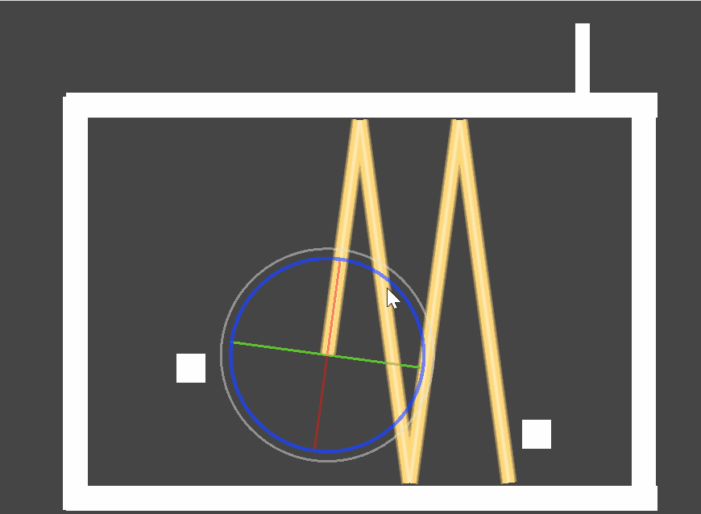
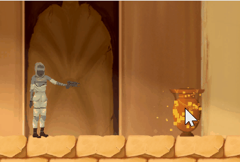

Stats
- Made in 8 weeks
- 2 developers, 3 artists
- Worked on coding and particles
- Made with Unity and C#
Play it yourself on: itch.io
Lasers and reflectionThe part that took me the most work in this project were the lasers. They stop at walls, and can reflect off of set surfaces (with the right angle, of course). There's also some objects which the laser can go through, but the player and held objects cannot. You can set the maximum amount of reflects to prevent memory leaks.
If the laser hits specific objects, that gets triggered and activates as an input.
Read through the laser script here
Input/output
I also made the buttons and the doors. The buttons have two types; one that needs to be held down and one that toggles each time it's triggered. The doors can hold multiple inputs, and are only activated if all of the inputs are active simultaneously.
Particles
Another thing I added were the particles for holding an object with the gravity gun and for shooting it. The held object particles extend to wherever the held object is, and as such has to vary in length.
Miscellaneous
I made indicators that show which input is linked to which output. Initially I had automatically generated lines which took quite some work, but unfortunately we eventually decided it looked weird and went with icons that light up instead.
Some of the puzzles were also designed by me, including all of the laser puzzles.
Lastly, I also made the pause menu, which also includes an for a speedrun timer that can be toggled on and off.

- Lasers reflecting and activating doors

- Gravity gun particles for holding an object